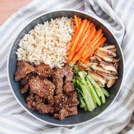

Korean beef bulgogi

Description
Beef bulgogi is a Korean bbq dish made from beef in a soy sauce and brown sugar mixture.
It is one of my all time favorite meals wether it's cooked at home or in a Korean restaurant.
Ingredients
- 1.5 lbs boneless ribeye steak
- 1/2 a small pear peeled and coarse grated.
- 1/4 cup low sodium soy sauce
- 2 tbsp brown sugar
- 2 tbsp toasted seasame oil
- 3 cloves of garlic
- 1 tbsp of freshly grated ginger
- 1 tbsp of gochujang
- 2 tbsp of vegetable oil
Steps
- Wrap steak in plastic wrap and put it in the freezer for half an hour
- slice across grain into thin strips
- in a bowl, combine pear, soy sauce, ginger and gojuchang
- place steak and mixture into a bag and marinate for at least two hours
- heat up 1 tbsp of vegetable oil in a pan
- cook your steak strips in the vegetable oil about 2-3 minutes per side
- serve with rice immediately